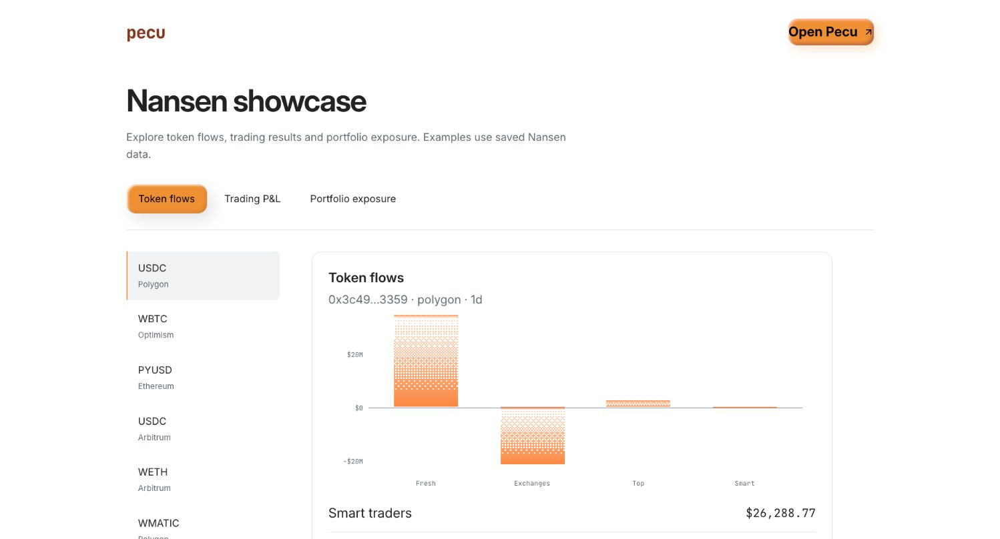
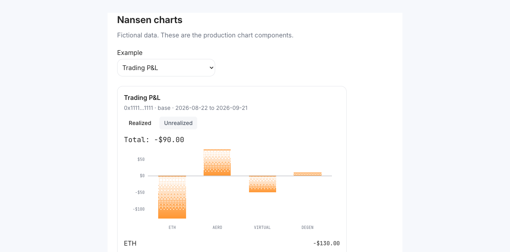

27 interactive examples from 1,000 successful Nansen calls: token flows, trading P&L and wallet/DeFi exposure. Collected 21 September 2026; examples are saved observations.
Screenshot walkthrough of the deployed page.

Three charts are implemented in Agent and Stocks chat: cohort flows, trading P&L, and portfolio exposure.
Open the interactive examples · Implementation notes
Verified: 360 backend tests, 49 frontend tests, frontend build, and four Worker dry-run builds. Browser examples use fictional data. Production is deployed. Live portfolio, P&L and USDC cohort-flow requests were verified in Pecu Agent, including controls and saved history. No funds moved.
